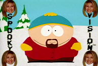

- Table of Contents
What Is "Evil"?
What comes to mind when you think of "evil"?
- Top free associated responses:
- Physical Victimization - physical harm being inflicted on someone by someone else.
- Psychological Victimization - abusive power, coercian, betrayal, interpersonal influence, intimidation.
- Emotion - emotion-related words. Reactions to victimization. Crying, fear, no hope.
- Description/Evaluation - Bad, necessary, human nature.
- Religious Symbols - the devlil, 666, Adam & Eve.
- Secular Symbols - money, Darth Vader (cluster of behaviours that typify evil), Dr. Evil, Black.
2 Types:
1, 2 → harm
3, 4, 5, 6 → Construal - "My words were construed" - how we make sense out of something
How can we know what "Evil" is?
- Implications:
- Evil is SUBJECTIVE - People don't always agree. People forcefully disagree.
- Evil is INTERPRETIVE - from psychological perspective, there is nothing inherently evil. Evil is something we apply to something.
"But it wasn't an evil laugh, it was normal.""It looked evil" - 911 "It's a freakin' plane!"Bad tummy feeling could cause this evil interpretation.
- Evil is a LABEL - When we label, we group it with other things. We imply that there's a fundamental similarity between the thing we're labelling and the other things it's grouped with. Strong link between labelling and perception. It's reflexive, automatized, non-rational, influenced by language (the labels we have available). Labels are always consequential. It's the categorization that drives out behaviour, determines our reaction to the stimulus.
Characteristics of the "evil" label
- Evil is:
- Descriptive - conveys or summarizes information about the object. Tells you something about that something.
- Category-defining - it's hard to see people as a "little bit" evil. All or none. [Tajfel - ask people to judge lengths of lines. C & D were same length. Everything same colour - C & D were "pretty much the same length". A-C were red, D-F were black. C closer to longer one, D closer to shorter one. People categorized them with the group. THE COLOUR OF LINE → COLOUR OF PEOPLE.]If we divide the world in categories, that has implications. We tend to percieve differences between groups.
- Evaluative - Evil implies an underlying good/bad element. Lazy - bad. Kind-hearted - good.
- Explanatory - Says something about origins and causation. It is a non-random label. Labels that imply cause (chain of events behind them): sick/ill, blessed, victim, parolee.
If evil is a label, it should operate on the same rules of labels. If we look into how people use labels, then we can understand how people use evil as a label.
When and how do people use other labels?
Should we group this new object with something that we already know?
Prototype A kind of mental abstraction, grand averaging, of the features of the objects that belong to a category. It yields invariant common features. The prototype has "old" objects that are perceived as having all of the same common elements.
The more features we have in common with the prototype, the faster, the more confident we'll be about the judgement.
If evil is a label and people engage in prototype-matching, then evil must have a prototype.
What are the features of the prototype of "evil"?
- Harm
- Intentionality
- justifiability
Harm
The focus: event and victim. The likelihood of putting this label is going to be increased. Severity/extremity matters.
Intentionality
Implies a doer, a perpetrator. A tree could create harm, but unless you thought Oofa, the angry winter god, you're not gonna go with "evil". Implies that it's being done with some degree of choice.
"repeat offender" status matters
> UTI OR HIV.
> Mr. X didn't know he was infected OR Mr. X did know he was infected.
= 4 versions of the story.
Asked: how evil do you think Mr. X is?
From very evil to a little bit evil:
high intent/high harm > high intent/low harm > low intent/high harm > low intent/low harm. Our laws reflect our psychology. INTENT is bad.
(lack of) Justifiability
Is that intentional harmful behaviour seen as justifiable or not? Based on the perciever - who is judging that action? Victims, perpetrators, or third party? All could be seeing a given behaviour as more or less justifiable. Taking the perpetrator's perspective matters. We are justifiers. This is the swing vote.
who were raping her 6 year old daughter OR whom she lured to her apartment with promises of wild sex.
When we contextualize it, it becomes evil.
Age matters. Mrs. Y is 30 - sexual contact isn't out of ordinary. Mrs. Y is 12 - made Mr. X a child molester = high evils.
The closer the act is to these 3 features, the more evil it is.
Two other research examples:
Can intent to harm (without harming) be "Evil"?
The more intelligent, the more insane he was → intentionality (capacity for choice. When hit targets, capacity for choice didn't affect how evil they were. No capacity to choose harm + no ability to harm = reduced evilness.
Wile E. Coyote is an idiot. People don't have nightmares about him.
Can Animals Be "Evil?"
No one can question the harm. But what was driving the behaviour? Intentional or instinctual? How you answer the question depends on what you're doing with the prototype. When we can't wrap our heads around something → Evil (for no apparent reason).
So what about "EVIl" people?
For offender, it was a good idea at the time. Even if it was for "a little bit of money".
How do we make sense out of the labelling process? Evil behaviour → evil person?
- Two paths:
- prototypic "evil" behavior → "evildoer"
Most of the justifications focus on environmental/situational factors. EXTERNAL factors. Why did they do it? Because they're assholes. Perceive doers of evil as evildoers. "What kind of person could've done this? The evil act was a significantly small part of the person's life, but it doesn't matter, because that person is a murderer. It takes just one act of evil to get labelled as evil. - symbolic "evil" cues → "evildoer"
About "evil" symbols

An "evil" symbol is a shorthand. It's a way of summarizing info and feelings. Words, numbers, abbreviations, etc. You may not be aware of it happening. They are possibly attribution-evoking. Embracing symbols - what kind of person would willingly wear these symbols?
People were presented with a Smashing Car Dumper Story. He had a tattoo that was: a cross OR a swastika. Asked: How evil was the person?Swastika tattoo → more of an "evil" person. How evil do you think his behaviour was? It was more evil with the swastika.
| "Evil" person | 3.00 | 3.64 |
| "Evil" behaviour | 4.xx | 5.xx |
Consequences of the "evil" Label
- Stereotyping = "demonizing"
Disney's "head start" - 3/4 of the Disney film contained references to "demonizing". Evil, wicked, demon. Kids are learning the evil stereotype.Baumeister's "myth of pure evil"
-
- "Evil" symbols make the MOPE more salient (cognitively online).
Study: Evil, religious, or neutral symbols. Got symbols in their head. Can these symbol bring myth of pure evil online? Yes. It's enough to access those stereotypes. The mere exposure brings up the myth of pure evil more online.
- "Evildoers" are assumed to engage in "evil" behaviour. People assume the worst. Don't give them the benefit of the doubt anymore. Serial killers shop at Wal-Mart in the most evil way imaginable. Even though the amount of evildoing is a small slice of their life. What must a serial killers fart smell like?
- "Evildoers" tend to be judged without mercy. "I'm not evil if I wanna hurt evil because they're evil." You will walk away seeing yourself as not evil.
- "Evil" symbols make the MOPE more salient (cognitively online).
The origins of "Evil"
The prototype of evil behaviour still applies (intentional, harmful, justifiable):
- Socialpeople as the cause of "evil". Human-focus.
- Metaphysicalunseen entities as the cause of "evil". Demons and devils.
We are prescientific eyeballin' - how you would experience the world if you didn't have any scientific equipment. Experience only through your own senses. Talking about ideas that existed before they had access to technology.
What is an Unseen Entity?
emerging consciousness → self as separate, "inner entity" (intuitive dualism) → causal agent
and so, by extension
unexplained event → caused by Unseen Entity
= intentionality (1/3 of evil prototype) - the cognitive foundation of religion?
We weren't always conscious. Our sense of self became. We are aware that we are aware, not just aware. As that ability emerged, we saw ourselves as separate. We experience consciousness as being not the same thing as our body. Where is my sense of consciousness? It's inside the body, but not the same thing as the body. We don't experience the world as a brain, even if it uses brain activity. Only psychotic people will locate consciousness outside the body. We experience consciousness as being the cause of our behaviour. How does our body move? We intend it to. I want to raise my arm and it is raised. My inner consciousness, I, my subjective self, wills it to move. Non-physical agent moves my body in the physical world. We learn this early on.
I have an inner entity that intends for physical things to happen and they happen. What happens if I see some other metaphysical thing do something that I didn't do? Other people didn't cause it. Something that I didn't see wanted it to happen.
Why an EVIL, Unseen Entity?
Eye-grabbing negativity - humans seem to pay particular attention to events that have negative outcomes. They're more likely to beg for an explanation. There's the harm. Makes survival-sense. When things are good, who cares? When things go wrong, we need to figure out why it went wrong. Natural pull towards negative events.
We describe these unseen entities with the intentions of them. Idea of an all-loving god - that's a first-world god. Gods used to be either nasty or moody.
"evil" vs. "just" or "moody"
conservatively religious perceiver + "bad" actor & really bad outcome
Being rational is nice when you can.
Someone said that the most disgusting item: Hitler's sweater. "I'm not gonna put on Hitler's sweater." Why? "Nghhhh. I don't wanna get HItler on me?"
Not rational at all. We are incredibly creative explanation-makers.
The FEELING of evil: using the concept of evil to make sense of bad feelings in experiences.
The 2x2 Worldview Model
The universe is one thing vs. The universe is two things
Metaphysical vs. Physical.
Animistic-Dualism (Animistic-dualists)There are two aspects to reality and one of those is spirit. (Western religions.) "Body vs. soul". We are physical bodies inhabited by a spiritual essence. The real self departs the body when we die. Some say the soul is indestructable (V!!!). There is the seen and the unseen. There are spirits everywhere - some good, some bad.
Animistic-MonismReality at it's core is one essence - spirit or mind or consciousness. (Eastern religions.) This physical world is not really real, it's an illusion. We get caught up in this illusion and we buy into this separateness. There's only one reality.
Mechanistic-Monism("hard" science.) Nothing metaphysical. The world can be understood in terms of physics and chemistry. All reduced to one thing that's not metaphysical. Domain of hardcore medical models. Everything can be explained by the brain.
Mechanistic-DualismTwo aspects of reality, but ultimately mechanistic. ("soft" science, mind/body psychology). An inner action between mind and body. Mental activity, mind, consciousness is an emergent property of the brain. Now that mental activity is taking place, that conscious activity can turn around and affect the brain. Brain → consciousness. Consciousness → brain. Mind is not a separate entity, but the activity itself modifies the chemical activity in the brain. Doing therapy changed brain structure. Consciousness does not exist independently. Without brain, there is no consciousness.
Possession - animistic-dualistic. How will the others interpret this?
Possession
Exorcists [Video]
Exorcists [Video]
Take note of how people are making sense of what they're seeing.
Exorcism fixed posession
Exorcism caused symptoms of posesssion. Suggestion brings the symptoms on, suggestion cures the symptoms.
Incestual experiences.
Temporal Lobe Epillepsy - skin welts.
"Played along for some of it."
Ellen Carney
Deliverance (like Exorcism)
Need to banish demons. "A psychological problem doesn't talk to me, a demon does."
Psychology - "demon" brings baggage.
Margaret Swift
Evil spirits in hospitals.
De-posession Process.
Theoretical exorcisms. Margaret was cured just because she expected to be cured.
The power of suggestion vs. exorcism.
Doctors have to rule out alternative explanations before an exorcism is performed. All had a physical change - an unpleasant one. Curious that the names are "depression" and not DEMONSDKAR. Depending on your world view, you're going to spin the data. Paranormal Manifestations (Levitation - spirits, misperception, paranormal). We don't have therapists in the Savannah. Detaching widows from the men's claim (Of women by women for women). Trauma: dissociate(turning attention away) when traumatized, could have been trauma from death or sexual abuse. Change prayers from latin to English and put Michael the archangel. Naming things and having everything in place leads to successful resolution. Spatial component to exorcism. Model of posession can decide to make the body uninhabitable so the spirit can leave.
Possession and Exorcism
- Origins (3 perspectives):
- Metaphysical
- Psychological
- Sociopolitical
Metaphysical - assumes animistic dualism
Material aspect and spiritual aspect. Some non-resident personality takes over the resident personality. We are souls inhabiting physical bodies. Normally, it's one spirit per body. Animistic dualists: some other spirit is invading the body.
An entity that is capable of having intentions, but their intentions go across the board. An entire range. Each column has some consistencies.
| Character: | |||
| MALEVOLENT | NEUTRAL | BENEVOLENT | |
| Agent: | |||
| demon | animals | unquiet dead (floaters -dumass human floating around) | gods |
| Motive: | |||
| destruction | domination | confusion | instruction |
| Method: | |||
| "SIN" | "INFECTION" | "CHOSEN" | |
| compliance (Ouija board, communicating with demons) | body opening/dirt | prep/"grace" | |
| Intervention (Exorcism): | |||
| overpossession - invoke a more powerful good spirit to drive out the evil one | bargaining - "I'll leave if you start treating this person better" | NONE! - a good thing. Don't need intervention. | |
Ritual Exorcism
verbal/physical - Symbolic objects, put the body in extreme discomfort to drive the spirits out. These are not random behaviours (they only knew what they knew at the time).
The label determines intervention
Psychological
Assumes mechanistic dualism (soft sciences). Once mental activity occurs, it can go affect the body as well. Mind-body interplay. No spirits. Mental activity can affect the body just as much as the body can affect the mind.
Possession challenges lay assumptions about the self
- stable, unified identity - we might make changes, but we are still the same conscious entity. There's a continuity to our lives. What freaks us out is when we start naming our alternate personalities.
- alert, aware, and in control (default self)
sleep paralysis (Cheyne) - You're awake but you can't move and you feel a presence there. Sleep paralysis is a case of REM sleep. Part of your brain is in REM, part is awake. You get imagery + paralysis from REM with sense of awakenessness.
Experiencing Self as "I" (Wegner)
What We Assume Happens:
Conscious Intention (I want to do...) → Action ("I do")
What Research suggest really happens:
The two are correlated, but conscious intention doesn't cause action. What if there there is no <-> there? It's possible for us to see ourselves behave a certain way without having consciously intended that. Oh, crap. We have a pickle. Behaviour that we don't have an explanation for because we can't track it to consciousness. Demon alcohol made you do crazy shit last night. It's terrifying to not have an explanation for such actions. This lays the foundation.
Possession as a dissociative phenomenon
dissociationa shift in attention, awareness, or identity. Daydreaming is a mild form (you're not quite there). On auto-pilot. If you can get really, really absorbed. Your attention is diverted elsewhere. Hypnotism.
- Three features of dissociation:
- Overlearned response to trauma - physical or sexual abuse. Their way of surviving trauma. A means of filtering out psychological trauma. It becomes habitual, a reflex. Early on, it has to be practised, but it becomes automatic.
- elaborate role play - You don't like the story you're in right now? change it. Makes it less intolerable. You're not dealing with the concrete reality. You turn it into a game. Maybe I'm somebody else.
- believed by self - You have to be able to believe it to some extent. Doesn't work if you don't believe in it. At the time, it doesn't matter. It's real. If you believe it, it's not really a lie.
- Three functions of dissociation:
- pain relief - hypnotized people. You turn your attention away from the pain to lessen the intensity
- protection - alternate identities (in most cases, there will be a protector).
- protest - The abused will be pissed. Usually an alternate identity that is angry. Can be an outlet.
Childhood Trauma (physical/sexual abuse)
When a child dislikes reality (the abuse), they will disassociate. They discard this old story, create a new story, and then believe the new story. When they continue to discard old stories, they grow to have a need for a story. To create a new story, they must have the ability to fantasize it as some people are terrible at making up stories. They must also believe this story or else it won't work. This story comes from the Cultural Prism. There are only a few tolerable stories: Satans, Demons, or Aliens.
"I didn't feel it, the demon did." - dissociative language.Sociopolitical - Assumes mechanistic dualism
Special case of psychological model.
Challenges
Metaphysical Challenges
Why isn't it more random?- Possession seems to be locally defined. The possessing agents identify themselves in terms of the locally-defined set of bad guys. Names are tradition-specific. Why are we only getting possessive identities that only match the host?
- demographically predictable - lower status, marginalized, victimized. You don't see CEOs possessed. Not completely random.
Psychological/Sociopolitical Challenges
- "Paranormal" phenomenon: seeing objects flying across the room, people speaking languages they couldn't have learned, seeing people levitate,
Menu to describe such events: SPIRIT, MISPERCEPTION, OR ENERGY (parapsychological - like using more than 10% of brain)?
Hate: Evil's Engine?
Text outside of Baumeister: Let me count the ways: An integrative theory of love and hate by John K. Rempel and Christopher T. Burris
What is hate?
Hate is a MOTIVE. Motives involve goals. Hate is about the intent to harm, diminishing the well-being of the other.(What is love? Perserving and promoting the well-being of the other). Love and Hate are both motives, not feelings.
Motives are thermostatic. Stay on until it hits that set point and then it turns off. Switch on, goal done, switch off.
Hate is frowned upon. You can fantasize about it, but you won't do it. Hate is gonna stay stable because it stays switched on.
Instrumental or ultimate goals - Something can be a means to an end or an end in itself. Different types of hate. Redress - revenge-oriented hate. It is a means to an end to restore order. Tethering - willing to hurt somebody in order to keep them close so they don't abandon you (abusive relationships - they get really scrambled and call it love). It gets mislabelled as love, but it's hate. "If I can't have you, then no one can have you." Sadism - I'm willing to harm you for pleasure.
When you think about the motive, the more things start to make sense. Altruistic love is an end in itself. Hate is not an emotion, but it can be triggred by emotions.
emotions as antecedents
How do we know?
The prototype study
How would you define hate? 200-something responses → 50 statements. Then to what degree does this capture hate as you. A 1 to 7 scale.
| motive to harm | "strong" emotion | "weak" emotion |
| intense emotions - disgust, etc. | agitation, irritation, jealousy | |
| 4.84 > | 4.02 > | 2.56 |
Desire to harm == hate. Emotion is not irrelevant, but not as important.
The "thought quote" study
If you were inside a person's head. How much these thought quotes capture hate.
Winner: "I want to hurt him. Period." [5.99]
Lowest: "I want him to stop doing what he is doing, but I don't want him to be hurt [2.50]."
You just have to want them to be hurt. "I don't want him to be hurt" → "That's not hate."
The Template Study
Had people read 1 of 2 descriptions of an experience. Represented two different types of hate:
Nihilistic (hurt. period.) or Redress (revenge).
Nihilistic: No reason offered, DIE, DIE, DIE. Redress: They need to be held accountable.
Asked people how much you think their thinking captures hate. Interest on whether intent to harm was in the explanation.
Nihilism [6.78] - mentioned motive to harm. "Nosebleed high."
Nihilism [6.00] - did not mention harm.
Redress [5.27] - mentioned motive to harm.
Redress [3.34] - did not mention harm.
Thus...
- People may have trouble spontaneously defining hate - they do not focus on intent to harm right away. They focus on the emotions. People focus on how something makes them feel.
- But... they know it when they see it.
- Still, they have to "see it" to "know it".
Why is Hate "Evil's" Engine?

Word-completion tasks: HA_E. Neutral and Religious [28%]. Evil [49%]. There is an implicit cognitive link between evil and hate.
Cain and Able - God makes him a social outcast. Cain: "My punishment is greater than I can bear." Cain intentionally harmed his brother. When we label someone as evil, it's like labelling them with "the Mark of Cain". Toxic and stigmatizing.
Hate = "evil" minus justification
If you're going to hate somebody, you better damn well have it justified. Haters should be motivated to self-justify. If we do not, we end up in the situation where we are fitting the "evil" prototype.
If hating is toxic...
1st line of defense: simple denial? > "I just intensely dislike them." People deny instead of admitting that they hate.
2nd line of defense: "populist normalizing"? > "Everybody makes mistakes." People say that everyone would hate them too.
Class Data
a) manipulate accessibility of "Hidden Observer" - "Have you ever hated anybody?" Hidden Observer is like a Dr.Phil
b) manipulate salience of social judgement - Before asked whether or not you've ever hated anybody. Half did a thing on rewards on being good, half did a thing on being bad.
c) examine effects on admissions of hate and framing one's experience as commonplace. Would they feel just like you did? → I don't stand out.
Hidden Observer > No Hidden Observer. 71% admitted hating anybody. 87% with a Hidden Observer. If people aren't getting pushed, they deny.
Costs → Social judgement is a bigger deal. Rewards side: turn down volume on social threat - HO doesn't differ. Costs: threat of judgement turned up, no HO - don't need to justify myself - don't need to populus normalize - high dissociation don't need to justify even more - not bothered by social threats. With a HO, need to defend - populus normalize - squirming - "in yer face" threat of social judgement.
The Hidden Observer is a part of ourselves that knows all that is going on. They know more than us. A part of the survey gained access to this Hidden Observer. Once it was brought online, it was easier to admit to hating someone. With it online, it pushed the person to admit. Social judgement was manipulated. Some did a questionnaire on others judging you badly and some did one on rewards on being good. Rewards turned down social threat (HO didn't matter). Costs turned social threat up. Costs + No HO = don't need to justify myself. Costs + HO = need to defend myself.
An easy way to justify hate is to...
Label the hated "EVIL". It's okay to hate evil.
Endless cycle: Hate begets "evil," which begets hate, which begets "evil"...
Easiest way to not see myself is evil is to see you as evil. They don't want that label, they're going to see you as evil.
Sadism: The "Feelgood" Hate
Sadism is a sub-type of hate, an instrumental form of hate:
MEANS - Harm other (physical, psychosocial) → Ultimate Goal - Positive affect (for self) - "I am willing to harm you because that brings me pleasure, gives me satisfaction, excites me (maybe sexually)"
Sadism IS NOT coerced behaviour, superficially harmful behaviour, unintended positive affect.
coerced behaviour (threatening) - motivationally, it's coming from a different place. The outcome may be the same, but the motivation is different.
superficially harmful behaviour (behaviour that looks harmful, but isn't) - A parent punishing the child in the interest for the child's well-being. If the intent truly is to protect the child, then it's not sadism.
Sadism is a luxury. If you have a masochist that says "hurt me", the true sadist will say "No." The true sadist denies you the pleasure because hurting you would be for your well-being, not theirs. The true sadist doesn't care.
unintended positive affect - If you get revenge, you may feel relief, that is the by-product of getting justice. Your main goal was not to get positive affect.
The Sadistic Continuum
| Everyday <--------- |
Pranking | Hazing | VICARIOUS | Sexual Sadism | Extreme ---------> |
| Trolling | "Normal Marital Sadism" | Animal Cruelty |
Pranking - Motivationally, no different from other forms of sadism. Root word of "pranking" is "evil deed." FML. Close relationships creating intense reactions. Not as severe.
Trolling - as outrageous and as controversial as possible. You're trying to piss people off, trying to get people arguing. Trolls get off on the chaos they create. "Don't feed the trolls."
Hazing - initiation. Could push some hazing to "Extreme."
"Normal Marital Sadism"
VICARIOUS (You don't have to be directly involved to find it pleasurable). You can take pleasure by watching something else do it.
Sexual Sadism - rapists, murderers who derive sexual pleasure from torturing their victims
Animal Cruelty - starts at a very young age. It escalates. Does it keep going? What makes it start, what makes it stop? Niche market of people who seek crushed videos for sexual arousal. "I won't be sending out a link or anything."
Mechanisms???
What is going to get me into the mindset?
Displaced Aggression (VICARIOUS - you don't get to be the big man. If I can see somebody else get screwed over.)- If I feel like people are mistreating me, in retaliating on powerful people, I will displace my aggression to the weak, the ones who won't fight back. Animal cruelty is more likely to occur when there is physical abuse. Children can't fight back against parent, so they abuse the animals.
<-->
Need for Intersubjective Elevation - If I'm trying to hurt someone, when they are suffering, that brings me satisfaction because I did that. I have power over this other. It's dependant upon my getting a rise. Easiest way to piss off a sadist is to not react (you're blocking their goal). If I can get one over on you, I get to be the big man.
<-> These two can play against each other. Need to pick safer targets.
I want to displace my aggression on those that are weaker than me and I will feel higher by doing so. I anticipate your reaction to my planned actions and am excited by it. I don't mind executing this plan and you don't matter. I am ready to hurt you. I hurt you.
Dealing with Censure
A lot of sadistic behaviour is not okay. What do you do then?
- Collectivize: (populus normalize). Say it's tradition, that everybody does it.
- Conceal: Hide it from the world. Intimate relationships.
- Justify: Find a good reason for it.
- Thoughtlessness: Ignore the consequences and think about how awesome it is. Don't think about how it could go wrong.
- Minimize: It wasn't a big deal. Don't be a pussy.
- Hidden Benefits: It's for something good. Fraternities: helps the group bond. This creates a cycle of victims becoming perpetrators.
Concealing + Justifying → intimates as "ideal" targets. You can keep them on edge. This works if someone does this really, really smart.
Consequences
- Sadistically motivated behaviour may be...
- cyclical: victims become perpetrators
- escalating: need to 1-up them by revenge
- enveloping: may start to bring in others. (Family abuse - may get transferred to an anima).
Propoganda: Giving "Evil" A Face
[VIDEO] Faces of the Enemy
All images are the same. The enemy is always a demon, a barbarian, the agressor, a liar, a madman, or some vile animal that can be exterminated without regret. David Rice.
David Rice - something was wrong. His world was in shambles and he needed to find somebody to blame.
War - They had more in common than not. When you're being attacked, you think they are trying to kill you and it becomes something very different. Trained as a soldier to see the enemy. Most powerful weapon of a soldier is the ability to see the enemy.
Have to feel that you are exterminating someone who is less than you. Japanese went after the leaders. Killing people who are not you and I. Easy to make an enemy out of different race, background, religion. "We never knew who they were." In war, there's a difference between killing and murder. No ambiguities in war. It's simpler - we know what we're supposed to do.
Almost all the carnage in the world has come from those who believe in god. We need to look at the eyes that see the enemy. Need to use a stereotype to catch their attention for drawings. Supposed to completely disregard the other side of the story. "It's just simply easier to take a side." Good guys need bad guys. We wanna be heroes so we need villains.
Empire Strikes back - Unmasked the monster and recognizes the humanity. You are the same life and the separation is simply the affect of time and space. Hero has gone past that self-preservation.
When you can't see the enemy, you don't feel them as the enemy.
"I'm not an evil person."
Propaganda: Giving "Evil" a Face
Key Questions
- What IS an enemy? An enemy is the other. Someone who's not part of our extended selves. Not part of us, our group.
- What "faces" do NOT appear? Posters won't compare enemy to a rock, or a plant (unless it's a Venus Flytrap). They need to have a contaminating quality. Propagandists all draw the same thing.
- What EMOTIONS are relevant? Certain images are more likely to evoke emotions.
- Is the enemy always EVIL?
- Is the enemy always HATED?
Propoganda is about trying to evoke powerful emotions.
| HATE (obliterate the other) | |
| ANGER | |
| Self -------------> | <-------------Other |
| DISGUST | |
| Self --------------\ | |
| \-------------->Other | |
| FEAR | |
| <-- Self <-------- | ---------------- Other |
Anger: self and other clashing.
Disgust: rejection of contaminants. You push out and push down. Trying to protect oneself from contamination. Core disgust - trying to protect your body. People talk about being disgusted without biology, but in a moral sense (symbolic disgust). They must protect the soul from moral contamination.
Fear: Fear doesn't evoke hate. Avoidance. Right after, you get an anger response. Fear can loop back up into anger. Other comes into contact with you and you try to avoid it. Right after, you get angry.
The Dehumanization Continuum
- Human Like Me = not evil + no hate + healthy respect. (We're enemies, but I feel ya.)
- Barely Human = anger + disgust + evil + hated. (You're nothing like me, gtfo.)
- Subhuman = disgust + not evil + hated. (You're just gross. I don't like you)
- Not Living = fear + not evil + not hated. (Scary. Just don't want you near me.)
- Not of this World = 2(anger + fear + disgust) + evil + hated. (GTFO IDK WHAT YOU ARE.)
"Human like me"... Some enemies are human like me.
= "Healthy Respect" - yes, you're going head to head, but there's an acknowledgement. We're a lot like each other. All enemies are not necessarily seen as evil.
= NOT EVIL
= NOT HATED
Not about harming the other. About being on opposite sides.
Worthy Opponent - jousting. Formal. Other is respected. Making and treating it a fair fight. Acknowledging that they're a worthy opponent. This is a competition with rules. Only do what's necessary to win.
"Barely human"...They're definitely not like us. All bets are off.
= ANGER; symbolic DISGUST.
= EVIL
= HATED
The enemy is seen as...
Aggressor - Japanese + Hitler poster. They are gonna get you. This isn't suttle. Going towards the midbrain. Trying to get the sense of "we're being attacked." We're not the aggressors, we're under attack. If it's self-defense, that's justifiables.
Glutton - A fat Westerner is gonna eat you up - not human.
Torturer - this is the method of the enemy.
Rapist - The enemy is accused of being sexually inappropriate. Sexual enticement.
Enemy of God - Fighting to prevent giant Nazis from stepping on churches. You don't mess with people's symbols.
Barbarian - language is not suttle. DESTROY the enemy.
"Subhuman"...
= core DISGUST (creepy crawlies)
= NOT EVIL (take away intentionality)
= HATED
Just because they're cockroaches doesn't mean I have to like them.
Beast
Reptile
Disease - puts Venereal Disease right in line with the enemy. Public Health message with propaganda. If you can connect humans to disease, you've got people hooked. They'll take care of the threat for you so they have your allegiance.
"Not Living"...
= FEAR
= NOT EVIL
= NOT HATED
We still don't want them around. We're simply afraid of it.
Death - certain finality to it. No torturing, just an end. It frightens people.
Faceless - a sense of interchangebility. All alike. Attack of the Clones.
Abstract - "America as abstract man, interested only in numbers." - critique of capitalism.
"Not of this world..."
= ANGER, FEAR, DISGUST x 2
= EVIL
= HATED
Opens up this entire menu of mythological possibilities. You can put every nasty, unpredictable aspect out there.
Demonic - Vampire Eagle President Nixon.
"Big Bad Ed"
"Obvious Evil": Serial Killers
Serial killers have become a modern-day Satan. Replacing a religious evil by secular evil. Serial killer are mythologized. They're not attractive, not intelligent. They show up in lots of pop culture context. Used to be fighting the devil, now fighting crime. Good triumphs over evil. High-tech, secular version.
FBI Definition of Serial Killer3 or more kills with distinct cooling off periods. These are motivationally distinct episodes.
vs. Mass Murderers (one time) and Spree killers (different locations) - in both, those victims are all part of the same motivational sequence. We get different characteristics with serial killers.
Serial killers are extraordinarily rare. 300 out of 360 million. Can't get representative sample. Can only try to extract similarities from case studies.
What would it take for you to kill?
Baumeister says, under most circumstances, we really don't want to kill people.
We are talking about the average person. It's not necessarily rational, but it makes sense to people at the time. Throw in mental illness, emotions, substance abuse, etc. Poorly planned, impulsive, etc. It doesn't take a lot. A person may have very limited alternatives because they're high as hell.
- perceived threat - Doesn't have to be actual threat. DAVID LEE RICE. Paranoia can be plenty. Threat can be directed to yourself or your extended self. They'll think about doing what's necessary to protect themselves.
- absent/limited/exhausted alternatives - They see it as the last alternative. Killing is the only way I can think of to make this problem go away. There's an eye-witness, I need to deal with that. People who kill themselves - the only way to stop the pain is to take my own life.
- killing humans, killing non-humans, "killing" humans - Are there any other things that people do that's kind of similar, but also different? People kill for food, kill for sport (hunting and fishing). People consider it their right to hunt. A lot in common with serial killers and hunters. Hunters hunt Bambi's mother, not humans. There's a difference there. "killing" humans - simulated killing. Video games and paintball. It's the same idea, but it's a freaking game. It's only play. The only thing that's different is: the targets. People are getting jollies by not taking human victims.
- perceived injustice/insult/injury - going beyond threat. You need to do something to bring your self back up to where it's supposed to be. What will it take to make me feel good and great and powerful again? The ultimate power is to hurt them and kill them. I have been shit upon on, I need to show them.
- fun - it is entertaining. This sounds fun and I am willing that other people suffer and die.
So what's extra?
ExpedienceLike "mind over matter." "I realize that they're dead, BUT YOU HAVE NO IDEA HOW HORNY I AM RIGHT NOW." If that's what it takes to satisfy my needs, then that's what I'm gonna do. It's worth the cost. The embrace of this is absolutely critical. This differentiates people who carry out homicidal attempts than those who don't.
The Big Picture
- (Lack of) Attachment
- Fantasy
- Willful Reduction of Inner Restraints
- Symbolic Expression - M.O. vs. "signature". Necessary vs. Extra. You're supposed to wear clothes. Wearing clothes is MO behaviour. Styling and colour is the signature.
(Lack of) AttachmentEarly emotional bond between an infant and the caregiver. We learn certain assumptions based on that first relationship. Most of what we call conscience is based on based on people mattering to us. I shouldn't do this because I would feel bad if they suffered the negative consequences of my behaviour. If this bond isn't created, you don't give a shit about anyone. It opens up your moral domain. Sets you up for the mind over matter principle. If people don't ever matter, then you can do anything. No rules.
undersocialized - it'll take a lot of abuse. Child can't predict how people are going to respond.
oversexualized - may have been sexually abused, witnessed sexual acts.
ostracized
- "the terrible triad"
- bedwetting - age-inappropriate bedwetting. If medical factors can be ruled out.
- firesetting - violence
- cruelty to animals - violence directed towards other living things.
Fantasykids with better fantasy can keep themselves behaved. They can keep themselves occupied. You take that fantasy ability and you put that kid in a chaotic, abusive environment, they can use fantasy in a compensatory way. They can start to use it in a way to think about getting back at people who are mistreating them. Fantasies start to become more rewarding than the outer world. People start to think that maybe if they start to do this, they'll feel even better.
Fantasy is not bad, but when you combine it with other things, it gets risky. What can fantasy do?
- compensation
- dissociation - step away from certain aspects of themselves. May step away from moral center. We don't need to talk about Dissociative Identity Disorder. It enables people to insulate themselves from emotions that they find problematic. Guilt and shame can be as problematic as fear can be. People don't have access to those memories.
- sexualization - sexual serial killers - high correspondance to what they do and their fantasies.
Willful Reduction of Inner RestraintsDifferentiates fantasizers from the do-er.
- entitlement - "I have the right to do this." "Why shouldn't I?" Can't think of a good reason why I shouldn't do this.
- narcissistic wound
- overkill
Types (adapted from Holmes, 1989)
"Externally" directed ("I have to") - I have to kill.
- Visionary - claim that an external voice is telling them to kill. Might have some psychotic disorder. "I'm being directed to kill."
- Mission - Responding to some kidn of ideology that they've embraced. Some self-appointed clean-up crew. Target members of a specific group. David Lee Rice. They feel like they're doing something that's part of some bigger plan. It's important and necessary. Iqbal.
"Internally" directed ("I want to") - motivation inside the individual
- 3. Hedonistic lust/thrill - process-oriented, adrenaline rush. comfort - pleasure by means of acquiring material resources. Most common female serial killers. Buddying up with somebody and then poisoning them to get their insurance money. Killing for material. Black Widow. (17% are women)
- 4. Power/Control - I get to feel like the big man. Absolute control over someone else. Ted Bundy: "You are God."
"The purpose of life is to make your mark on this earth." - Andre Chikatillo, Serial Killer. We want the same thing that serial killers do. Motives/Goals versus MEANS. We want the same things in life, but what differentiates us is the means. How do you go about getting those needs satisfied?
The Functions of "Evil"
Why is there "evil"?
One way: Objective standpoint - no labelling, no disagreement. This self-evident thing that's there. Then go from there.
Other way: Subjective label - Evil is a label. Then why do we have an evil label? Does it serve some sort of function?
- Three approaches:
- Theological: "the theodicy problem" - if God is all good and God is all powerful, then why is there evil? Treats evil as a given (objective). It will fit our prototype easily. They're interested in God's role in this. It's a fairly limited menu.
God is...
a) not all-powerful: Sorcerer's Apprentice - things get out of control. God got creation going, after that, things spiral out of control. This is a pisser. Story of Jobe. b) not all good (Jung): Narcissistic gods.
c) a driving instructor: Whoever is in the driver's seat has most of the control, but the driving instrctor can hit the brakes if thigns go out of control. We are the driving students, the focus is on our growth and skill development. If things get too chaotic, god will intervene so evil will never go too far. - Philosophical: (subjective) logical/linguistic necessity. Focuses on evil from a label standpoint. If it is possible for a human to conceptualize/label an ideal, a greatest good, then we should also be able to think of a greatest bottom. Something that is better than everything else vs. something that is worst than everything else. Evil happens to be the evil for the greatest bad. If you eliminate the greatest evil, the second greatest evil will become the greatest evil. If you keep knocking things off, it sounds like first world problems. "Why do hot dogs come in an 8-pack and hot dog buns in a 12-pack?"
- Psychological - (sbjective) "evil" is functional. Evil as a label. It means certain psychological needs.
- Two Psychological Models:
- Out There: Not in me, but out there.
- In Here: The potential of evil inside me, and it's inside everyone else.
If the idea of wearing the shirt is uncomfortable, you're leaning towards the out there model.
"Out There"
Evil is not in me, I'm not evil. Evil is in the realm of the unseen. It's out there.
Cognitive Functions
Thinking, information processing.
- simplification - it simplifies our view of reality. There are the good people and there are the bad people. Everyone I'm close to are good, everybody else, I'm not sure. People see the world as a battleground of good and evil. People know how they fit in. I have a mission, I have a clear enemy, I'm sure of myself. It's really, really appealing. We don't like complex models.
"What type are you?" - differentiation - We know who we are by knowing who we're not.
Affective/Motivational Functions
- self-esteem - It feels good to feel good. It feels good to feel better than other people. Social comparison. I am better than this other person.
Reality shows - some folks love watching people who make a fool of themselves. We see people breaking the law, doing embarrassing things, doing things we'd never do. We can look at ourselves to say "Good lord, I'm not gonna do that." Stealing stuff and saying "I'm not a thief." "I'm not an evil person." (David Lee Rice).By default, I'm not evil.
- self-justification - right makes might. If we convince that we are correct, then that unleashes our motivation to carry out that behaviour. Aggressing from evil justifies doing evil. If you frame things of being in a battle, and you are obviously on the good side, that is the ultimate justification. By having an evil enemy, that helps people to come together and fight.
How?
Projecting "the Shadow" - Robert Bly - the long bag.Every part of our personality that we do not love will become hostile to us.
I am good (in a moral sense). We have to take all those things about ourselves that are unacceptable, and squash it down into unconsciousness. We call these things evil. That stuff goes down and out. It goes beyond the self. Projection of badness onto others will distract us from badness. We keep the evil a secret. I can't admit it to myself or others, so I need to project it onto others to create a smokescreen. Why are you focusing on me when the real badness is out there?
Wholeness- admitting that we struggle with things. But bring those alongside with our strengths. If we're dealing with both good and bad at the same time, at least that's honest. This is a very, very risky thing. A lot of us would prefer to push down and out.
Not necessarily good and evil. Smart and stupid.
Good^ "wholeness"
| ^ ^
| | |
threshold of awareness
|
|
v
Evil "down and OUT"
Some old in-class data
Unstable Sense of Self (reliant on external ID markers) ->
disturbed by idea of demonic possession
"cannot imagine self as 'evil'"
"evil" should be hated
There are some payoffs to an out there model, but there are also risks. The risk is that there will be no mercy. The risk is condemning the innocent. If you divide the world up, there will be a lot of grey that you will try to turn dark. The world must be in black and white. Heroes and Villains. People get caught in the crossfire.
"In Here"
I am capable of evil. I, like everyone else, am capable of doing evil things. People who find that statement objectionable will justify their actions. We always find someone worse than we are.
Cognitive Functions
- perserves complexity - there's no such thing as pure evil, it's always more complicated than that. There's two ways to make a decision - make the decision(not consider moral implications) or agonize then make the decision(consider moral implications - preserves complexity).
- establishes similarity - I am capable of evil just like everybody else. We all have that in common. (Like Human like me.)
Affective/Motivational Functions
- creative tension - if you're going to admit that you can do this stuff, you have to think of creative ways to not do these stuffs.
- humility & empathy - It's a struggle to do the right thing, it's a struggle to figure out what to do. I get it. I've screwed up too. Unlike an out there model, I could be in a similar position. It becomes good vs. evil in us as individuals. If we all have this, it's less conflictual..
The Risk? The risk is letting off the guilty. No justice. There are some individuals whose dominant way of moving through the world is to exploit and use others. Then what do we do?
Abraham Maslow - essentially his psychology of cool people.
Question Time (Activity)
- Think of a specific example when you (sanely) confronted someone whom you felt "wronged you."
- What (if anything) did s/he say in response?
- What general types of responses are evident in your group? Denial, apologies, making it seem smaller than it really was, making up excuses. Given explanation (their side of story), half-baked apologies (sorry, not sorry), blame, minimization, turn themselves into the victim, taken aback, defensive, escalation, strong reaction, asserting dominance. No one has mentioned that they were actually sorry.
Self-Justification
Massive motivation for us to justify our behaviour. Consiousness developed to create a self-justification system.
"A wrong has been done."
How do people deal with confrontation?
| v 1"no it hasn't"(minimization of harm) 3"I did it, but..." 2"I didn't do it." 3a"I AM GOOD" 3b"I AM NOT BAD" 3c"I AM NO WORSE THAN YOU" 3a"morale mandate" 3bsituational attributions 3cpopulist normalizing 3aOwnership 3b NO OWNERSHIP 3cOWNERSHIP 3aMORAL 3b AMORAL 3cIMMORAL I'm the hero It didn't mean anything, it was a one time thing I did something immoral, but you're immoral too ---- threshold of acceptability ---- UNACCEPTABLE 5OR another way (very different strategy, but motivation similar): "I am more powerful than you." - I don't give a shit what you think. Go ahead, take your best shot. In the end, I can hurt you more than you can hurt me. (These can say ALL OF IT and not mean ANYTHING. Demonstrate power over you by making you believe me.If I can get you to believe that I am the victim, I won. - The clinical term for this is "sneaky bastard/") versus 6"I did it, and..." (admitting) 6aI was wrong.(acknowledging) 6bI am sorry(legitimate - empathy for the person who has been wrong) 6cI won't do it again (self-regulation) 6dI'll fix what I can (what separates everything - amends) 1denying harm - there's not sufficient harm to make a case out of it. I don't know why you're making a big deal about it. Denial 2No one can deny that wrongdoing had been done, that harm had been done, but it wasn't me. I might have some idea of who did. Deflection 3aYeah, I did it, but I'm good. I had a good reason to do what I did. There is a good reason why you experience that harm. I harmed you for a good reason. "moral mandate" - there are certain things that are right to do so those are the things you should do. If you have to hurt them in order to stop doing what's wrong, then hurt them. Ownership - they feel proud. Not ashamed, not sorry because it needed to be done. That harm was right. 3bGood enough reason. Doesn't have the fire under moral mandate. situational attributions - people want you to hear their side of the story. Here's what was happening to me at the time. They find things that affected them situationally. It's not a reflection of my character because there was a bunch of shit going on around. Eve: "I was deceived." Adam: "My partner put me up to it. I was victimized" Legal: "I was under duress." "I was mentally ill/under the influence." "I was so drunk, that's not the reflection of the person I am." No denial, but blaming external factors. Distancing from the core-self. It is what it is. It happened. It seemed like a good idea at the time. It was an accident. I didn't think it through. Revenge. Reasons beyond the self. Becomes Neutral. 3c I'm not perfect and neither or you. Maybe it was bad, but you do bad things too. Blending in. "I'm just a reflection of you." - Charles Manson - populist normalize Keeps you afloat. I don't wanna be lower than you because then I'd be subject to rejection. You have no reason to condemn me, if you aren't going to condemn yourself (3c)What's the engine? (why)
Remember the "Mark of Cain." -- social outcast. Being evil is the ultimate label for someone who is a social outcast
Self-esteem as a "sociometer" (Leary) - self-esteem is an indicator of relational value. In general, do people think you're a pretty good joe? You play reasonably well with others. Enough people like you. If someone doesn't like them, self-esteem drops. It has adaptive value over the years. We're a cooperative humans. We are way more powerful together than alone.
Social rejection and physical pain (MacDonald) - when people lose an important person, they're heart broken. There is evidence for that now. People experience rejection as physical pain. A very hardwired process.
Self-justification to avoid the pain of social rejection - When I go into excuse-making mode, I'm trying to ensure that I'm not going to be cast off by myself. Because it hurts. I don't want to feel like that. It's so intense and reflexive. People feel threatened when confronted. A nonconscious physiological chain reaction. people freak. Social panic attack.
The system can break down when: We carry audiences around inside our head that don't necessarily correspond to the world.
- If internal audiences are given priority. Social anxiety - "I don't want to do this because everybody is gonna laugh at me." Most people don't care that much, they don't notice. Exaggerate how many spotlights that are on them. These people feel less social connection. Self-sabotage. Or internal audience tells them that they've done something wrong. All I need to do is to convince my internal audience, and not the real people. I can sleep at night as long as the internal people are good.
- self-esteem is pursued for its own sake - less about repairing the relationship and more about feeling good and not bad. Narcissism. Self-esteem is a kind of drug that people can become addicted to. Less about social connection. Leads to lying, false apologies. As long as I can convince you that I'm a good guy, I don't actually have to be a good guy. Chasing the high of self-esteem.
Search for the "Evil Personality"
Looking at things from the individual level. self -> self-appraisal. How do we as individuals evaluate ourselves? At the end of the day, our self-appraisal is positive. We got enough basis to like ourselves okay. Fairly grounded self-evaluation.
Individuals with a deflated sense of self are folks who are depressed. They are low-energy. If there's any harm, they're going to harm themselves. They're in screensaver mode.
An inflated self evaluation is a self-evaluation that is more positive than the data jsutifies. Those who think of themselves as being way better than other people think. It is artificially supported somehow. Individuals must engage in measueres to keep that level up.
^ Inflated (+++!) - They're living in their own world. I'm AWESOME.
|
|
| Accurate (+) - They're okay. I'm aight.
|
|
v Deflated (-) - Think pretty badly about themselves. I suck.
Features of the Inflated (Narcissistic) Self
- grandiose self-image - It's great, it's awesome, it's special. They will see themselves as better than everyone else around them. A focus on specialness. Involves explicit social comparison. If I need to see myself as great, I need to engage in strategies that are going to keep myself up like that. I may routinely put other people down, point out other people's flaws. Trying to maintain that gap of specialness.
- extreme self-focus - "I really want to be special to be somebody." "You're special, I let you help me."
- lack of empathy - They'll have other people around, because other poeple are useful until they aren't. They keep people around so they can tell them how awesome they are. You're not going to firm my awesomeness, I don't need you in my life. I don't want anyone to confront me about doing anything wrong because I didn't do anything wrong.
- sense of entitlement - sense of deservingness.
You receive $20 in appreciation for research participation. Anonymously donate any portion to stranger who received $0. No one would know - how much would you like to donate?
lower 20% on NPI: $8.21 - low narcissim scores.
upper 20% on NPI: $3.80 - high narcisism score
Scoring low on a narcissism scale doesn't mean a negative self-image. Humility is not about feeling bad about yourself, it's about a realistic self-appraisal. Acknowledgement of interdependencies of other people and factors. Inflated point is problematic, but low is not.
the picture gets clearer when we add "stability"
2x2 self-appraisal Model Inflated(+++!) ^ Stable <--------------------------------> Unstable Accurate v <-- How other people are likely to perceive these individuals, their gut reactions, how folks in these quadrants deal with negative feedback. --> Narcissism is in the top two quadrants, regardless of stability.Stable-Accurate: confident (does not mean arrogant asshole). Realistic self-appraisal. Very clear sense of what they're good at, but also know their weaknesses and their struggles. A positive mixed bag. Working on weaknesses, gettign help on weaknesses, this is what I do well. They inspire reliance reactions in people. "This is a good go-to person." Sociometer- That's a decent person. They play nicely, they're okay. How do they deal with negative feedback? They will consider modifying themselves (maybe) - they take it realistically. (Ryan - recorded people trashing him. He took it seriously and changed. He said it was accurate.)
Unstable-Accurate: insecure. Their self-image is more tentative. More day-to-day. Life's little tradgedies and setbacks are a bigger deal to them. May initially inspire nurturance? They seem like decent people, but they seem more fragile. More often than not that they're in some kind of crisis. It get's tiring. How do the insecure deal with negative feedback. They try to modify self & other. I'll do anything, just don't leave me. I need this connection, what can I do to make you stay? A sense of desperation. Sensitive hair-trigger sociometer. Really easy to go from accurate to deflated.
Inflated-stabke: pompous. They present themselves as dismissive. They're always the smartest people in the room, just ask them. Everybody else to them is pretty stupid. Sometimes it happens in a classroom. "I could really be teaching this class, but I'm just going to comment on it." Inspires eye-rolls. It's a one-on-one thing in the classroom for them. Hwo to they deal with negative feedback? They respond by modifying no one. I'm not gonna change your midn on it, you wouldn't get it. They don't do anything. Obliviousness. You can't really convince them because the pompous know better. You can't rattle them. It makes the pompous a little bit less harmless. If you can't rattle them, you can't upset them.
Inflated-Unstable: Evil. Very, very vulnerable to puncture. They are unpredictable. You pretty much know what the pompous are going to do, but these... you don't. They're going to react, but you don't know when and how. If you see it, RUN. You usually don't see it. "I'm more powerful than you." or they try to do something else. They prefer to modify other (NOT self). I want you to change what you think about me without actually changing myself. That's when it gets scary. Layers and layers of deception, deflection, and misdirection. They're trying to keep an inflated self-esteem up there. They tend to drop to deflated which freaks them out. They have a high motivation to engage in ways to stay at a high level. They're trying to recalibrate the sociometer.
"Pompous" vs. "Evil"
Modeled vs. compensatory? Pompous individuals may get the message early on. No matter what you do, you're awesome. You're awesome because you're my son. They go out into the world and know that they're awesome so they get confused when people act like they're not awesome. Not just a good kid, you're the greatest kid that ever walked. The sociometer doesn't matter.
The evil have a compensatory approach. They construct a false self. Trying to fight against the negative dips.
"unstable" -> vulnerable to "sociometric" threat. What other people think about them matter more. It's mattered in different ways.
"self-esteem addicts" & "chasing the high" - inflated unstable. Addiction. Initial positive experiences, but can never get that original experience back, but keep trying. They will increase dosage, and engage in riskier and riskier behaviour to try to feel the same way they once felt. Think about the lengths people will go. People are willing to take a life. It's not about feeling high anymore, it's about not feeling sick. There's a desperation that kicks in.
This often manifests as:
- Intolerance of guilt = "shame panic attack"? Guilt says I made a mistake. Shame says I am a mistake. Guilt is about behaviour, shame is about the person. They're afraid of shame. So when they feel guilt, they go "holy crap, can't allow that to happen." Guilt => shame. People want to escape the situation. They have to do anythign thats' necessary to keep shame from happening.
- deflection of personal responsibility - If I can do that, I can deal with the guilt and then the shame won't happen.
- at the expense of (vulnerable) others - they take responsibility of it. Addicts can't be addicts without enablers. Enablers bail them out of jail and give them a place to stay. They deal with the negative consequences. They keep them from rock-bottom. It can result in physical/social/psychological harm.
Peck's "evil personality disorder": If I proposed a EPD, I would propose these as characterisitics (DSM diagnostic criteria)
- scapegoating - finding somebody else to blame. Can be quite subtle.
- extreme intolreance to criticism - trying to avoid shame panic attack
- image of self as (morally) "good". They increased myth of pure evil. Evil is out there.
- elaborate justifications (subject to breakdown) - gets hard to keep the facts straight with so many lies
"Gut" reaction to evil: (Only happens once you make the connection)
- revulsion - Are you kidding me? Intense moral disgust. You are this clueless that you're going to pull something like this?
- confusion - What the hell? What are you thinking? How are people thinking that this is a good idea?
- fatigue - Power play - You don't want me to get the authorities involved, do you? This takes a lot of energy.
The Dark Tetrad - one of the original three was narcissism. Machiavellianism, Psychiopathic, Narcisssism + Sadistic(4th)
Machiavellianism - interpersonally manipulative. Goes in inflated area. Cynical view of other people. Get them before they get you. Tell other people what they want to hear if that's to your own advantage. Dog eat dog world. You gotta be the biggest dog out there. Pretty confident about their ability to manipulate other people. They tend to be very goal-oriented (prioritize material goals). Long-term goal-orientation, STRATEGIC => stability of self. Usually illegal activity, but typically never violent.
Sadistic - Closer to unstable. Trolls. I want you to experience physical/psychological harm because that is a payoff to me. I get pleasure from seeing you hurting. Less interested on material, focusing on interpersonal goals => a little more unstable. They're more reactive.
Psychopathic - very impulsive, erratic quality. Criminal, violent tendencies. It seemed like a good idea at the time. Blatant disgregard for other human beings. Towards the unstable end.
Quest for public admiration - narccisist. Takes care while taking advantage - Machiavelliants. Psychopaths impulsively grab what they want, not caring wth is in their way. Seeking otu opportunities - Sadism.
I think of myself at a level that is beyond what is sociometrically valid. There is a motivation/appetite for all of this.
"Evil Personality" 2: The Engulfment Motive (Burris, Rempel, Munteanu, & Therrien, 2013)
Conceptualization - "Amoebic Self Theory" - What does a single-cell organism need in order to be able to survive in the world. There are 3 survival needs: eat, retreat(protect ourselves), excrete. How does an amoeba do it? It will engulfe that food. We're more complex organisms, but we do this psychologically as well. We need to take in stuff, protect ourselves from threats, discard what is no longer useful./
eat = engulfment
3 domains of the self
Bodily - sensation. Taking things through your senses.
Social - domination. How do we engulfe in an interpersonal context? By dominating people. Can I influence you without influencing me? Influenced without being influenced by.
Spatial-symbolic - acquisition - everything has symbolic quality.
What if the "appetite" doesn't "shut off"?
Appetite is good - hungry => need food. What if an appetite doesn't shut off? Most body functions work like a thermostat. What if the thermostat is broken? What if there's no such thing as enough? What if people just want to take in, take in, take in,... Growth for the saek of growth is the idealogy of the cancer cell.
Bodily - sensual excess. Getting too much. "The meal isn't over when I'm full, the meal is over when I hate myself.
Social - domination and control
Spatial-symbolic - treating the world as if it is mine.
How far will people go to justify their "appetites"?
Study 1: The "Engulfing Self Scale" & Correlates
A three-part scale. Domain gets bigger from physical to social to spatial.
- Bodily: Sensuality. The degree to which you take things from the outside world. Games like Twister are fun because of physical touching. Martial arts, dance, massage, trying new foods, pets are for petting. Taking the world through your senses and giving a certain priorirty to that. Your own individual person.
- Social: Gave people a vartiery of audiences. PArtner, close friend, hated other. 7 or 8 audiences. Circle every person around them you like to do this. Competing against this person, using what you have to get what you want fromt his person, being able to hypnotize this person. Circle all possible targets. Focus: interpersonal domination. The more you wanted to be hgiher than someone, the higher you scored.
- Spatial-symbolic: To what extent do people treat the world around them as their own? The core item: No matter how much I have, I want more. I'm just that kind of person. Would you be willing to rip a public phonebook. Does it bug you if someone is sitting in your spot in a classroom? MINE. The entire surroundings.
If you score on one, you'll tend to score high on the other two.
- Correlations
- Bodily: sensation-seeking (lite) - prone to boredom, adventure-seeking, they place high value on stimulus of experiences, thrill-seeking, but nothing illegal. Didn't predict anything bad.
- Social: Linked to Machiavellianism - wanting to have an edge over other people, trying to get the best of somebody else
Psychopathy
social dominance orientation - some groups are more priveleged than others, and I like it that way.
economic system justificaiton - Spatial-Symbolic: sensation-seeking(heavy) - want to mark their psychological terrirtory. Includes illegal behaviours. I'm willing to do something illegal in order to be stimulated. More strongly linked to Machiavellianism, psychopathy, narcisism, psychological entitlement(strongest correlation - 0.5), social dominance orientation, economic system justificaiton. There's nothing pro-social here. Not playing well with other groups. All interpersonal and intergroup problematic.
DV: Willingness to expose group leader.
Low levels of spatial-sym engulfment - doesn't matter if it helps or not. High spatial symbolic engulfers - If group leaders info helps, not gonna turn them in If it doesn't help us, screw you. Report leader.
I am going to treat you based on how useful you are to me. (Very Machiavellianist).
Study 2: More Correlates
- Bodily: openness to experience, univarlism - respect for all people and nature, beneveolence, negatively related to power, partner enriches me. They're nice. Pro-social values.
- Social: hedonism, achievement. Nothing overtly problematic.
- Spatial-symbolic: negative agreeableness, negative conscientiousness. Not concerned about deadlines, power - partner doesn't enrich me - no growth goals, greed (super strong relationship. No matter howmuch i have, I just want more. Nothing pro-social here. MY partner really doesn't do that much for me.
Study 3: Justification of Looting Behaviour
After Hurricane Katrina. Found $100 necessities(food, water, batteries) OR watch. Take looter's perspective OR not.
DV(dependant variable): willingness to justify looter's behaviour. Take a justification, any justification.
Higher spatialsym, the more willing you are to justify the looter's behaviour especially when taking necessities. Other two not willing to justify. If I can figure out a good enough reason, I'll do it. Higher spatialsym - already taking looter's perspective already. Low spatialsym, are saying screw you, I'm not taking the looter's perspective. Asked to go there, but won't. Higher "I would've gone there anyway. You had me at Hello."
Study 4: Justification of Self-serving Ticket Allocaiton
Doing vocabulary test - competing for cash prize. they were competing with online :other:. If they won, they would get to divvy up the tickets. Whether you win or lose, there are these tickets you can divvy up and justify allocation. Justification was an issue. 2badsosad the other person wasn't picked to allocate the money. whether they won or lost, higher satialsym was associated more justification, especially true when they won. Self-serving is associated with justificaiton.
If you put these studies together, there's no linking bodily to social. Bodily ain't illegal. Their values are pro-social, no negative. A little bit more negative for social A little bit of dominance. Once we get to spatial-sym things explode. Getting a consistent dark-triad, negative pattern of stuff.
any bullshit reason that can bolster "Iwant it, I need it"/. Is it the real reason or is it a good reason. Any justification, if it sounds remotely plausibly, you'll go for it. Doesn't have to be a real reason, just has to be good. Justification: The REAL reason, or just a good reaosn? Is it selfish not to have kids? Is it selfish to have kids? People who don't want children are selfish. Caregivers will go "It's not for me, it's for the kids." Is it the real reason or a good reason?
God wants you to be rich. Prosperity Theology.
Is engulfment motivation the "engine" of the Dark Tetrad?
Is greed, the appetite that doesnt shut off, the motivation to dark tetrad behaviours? not saying it;s true, but it could be true. unconstrainted appetite thats the foundation.Power
Lord Action(some famous dead white guy): "Absolute Power corrupts absolutely. " Can power corrupt?
What is power? The ability to influence others, to affect their outcomes in some way. It doesn't sound so bad.
no power -------- some power -------------- absolute power
"invisible"------ most of us -------------- "irresistable"
- no power: invisible - that's not a good thing. Learned helplessness. They become depressed .
- some power - most of us.
- absolute power - "irresistable" - very few people who have that.
Two understandings of power
- Power as a value: something that is actively sought. Internally motivated to seek out these influence opportunities. When they are actively motivated, and it is an end in itself, it becomes problematic. This dynamic where I have the sense of influencing you, but you don't have the sense that you can influence me. It can end up becoming a twisted form of dependence. There is an inequality. How can I be assured that I do have power over you? You have to give me feedback so I know. Easiest way to piss of a sadist is to not respond. If you're not giving me the response that I want, you're blocking my goal. The sadist is dependent on whoever they're targeting.
Family story. 6 years old, got into trouble. Spanking. As a budding psychologist at age 6... "You want some more?" "Yeah." Took another whooping. Dad needed to get the right response.Twisted because power-seekers don't admit that they depend on people.
Philosophical - Hobbes' Leviathan - Those who want power fear equality. They're not comfortable with the idea. If everybody has the same thing, nobody has the upper hand. No has something the other wants. Research basis for this? - Schwartz (1992) - A cross-cultural theory of values - what defines a good life. Statistically narrow down into 10 basic themes. Each slice of pie is a different value. Slice on the other side, is incompatible. Power is one of the big values. What's adjacent (most motivationally-compatible): Security and Achievement (Safe and Winning). On the other side: Universalism (Equality, Justice, Harmony, Nature). We end up prioritizing things differently. Power is positively correlated with Spatial-symbolic Engulfment. Relationship - they don't benefit me because they don't make me feel powerful. - Power as a role: Externally imposed or found power. Not power that people seek out. They may end up in a position of responsibility whether they sought it or not. Found power.
The "metamorphic" effects of power (Kipnis, 1976) - Looking at power as a role, not a value. Can it change you if you're in a power position? Yes.
Galinsky et al. (2006) - Given a dry erase marker. Draw a capital E on your forehead. Thinking about a time when you had power over someone else or someone had power over you. 2 different ways. Did it affect how they drew the E? Flipped E - writing from their perspective = high power approximately 3x more. Proper E - writing from someone else's power = low power. Most people did it proper. Being in that power role, seemed to provoke self-focus.
Types of Power-based influence strategies (Kipnis' Model)
He views power as a cumulative thing. The higher the power an individual has, the bigger the menu, the more options they have at their disposal. High power = strong, moderate, and weak strategies.
- Strong - in terms of rewards, punishments, and threats. These influence techniques are based on the effects the powerholder thinks it will have. Behaviourist model. You can shape a lot of behaviour with rewards, punishments, and timing. Change your behavuour or suffer the consequences
- Moderate - more about logic, appeals about reason, conscience. Best argument possible. Let's try to figure out what makes sense. Obama: "It's the right thing to do." - try to appeal to a sense of shared values. We can figure this out. Very cognitive focus. Challenges irrationalities. Influence technique that's based on people being irrational. Help them see the course of direction and they're gonna go that way willfully.
- Weak - flattery, begging for cooperation, help. I can't be the one who decides this, you have to be the one who decides this. You're looking nice today. Admitting that you don't have to, but c'mon, why not? If that's what it's gonna take, that's survivable.
Plays out in relationships - pissed off = high power. Can play out in a lot of different ways.
- Three General Principles
- Iron Law of Power - higher power individuals have access to a bigger menu. The greater the power differential, the more likely they're going to use strong tactics.
- return of the "inflated, unstable" - very cynical. People don't like me very much, so how do I get what I want from people? I have to force them. They will sometimes seek out powerful rules. It legitimized this strong tactic against other people. They were perfectly fine people, but the moment they got promoted, they turned into asses. They're waiting for that time where they rise, then they can do what they wanted to do to people what they wanted to do the whole time. When an inflated, unstable obtains a power position, they can get nasty real quick.
- Obeying strengthens, resisting weakens - if the power holder is going apeshit, that's the clinical term, with the application of strong influence techniques, if the targets respond with compliance, the power holder concludes that this works. Whereas if initially, the target resists, then they might stop using that technique. Targets need to intervene early on.
controlling others through "Strong" means
Within the mind of the powerholder.affects others - assumptions about others' motivation and ability. If something works, then they go "this works because that's how people are." Powerholder looks at their targets as rats. Can lead to devaluing others and their performance. Leads to an unsympathetic view of the people they're trying to influence.
affects the controller - increases social distance from others. I can't rely on these people, they're nothing like me. Contribures to inflated self-image which is terrrifying if the person is already inflated. I am awesome because when i say jump, poeple say how high? Contirubres to morap exceptionism - there's a different set of rules for me. I get it, they obviously don't. I should have more leeway. "When the President does it, that means it is not illegal." - Nixon,
Look for influence strategies.
I know you have a conscience.
Reasonably, economically.
Personal favour.
Making deals.
Corporate "Evil"
- What Organizations Do Harm? Two types of organizations.
- Social Control - designated watch dogs. Authorities. Government, military, peacekeepers. It's their official job to maintain order and structure. Because they're seen as legitimate authority, they could do a lot of harm.
- Civilian - focus on corporations, business entities. Educational and Religious insutitions are a hybrid - civilian organizations with social control. They're not responsible for law and order, but people definitely look up to them.
- How do organizations harm?
- deliberate - externality; corporation as psychopath. Refusal to take responsibility (Peck). WE're going to try to maximize our profits, if there's a mess, we're going to let other people clean up the mess.
Factory that produces chemicals - could try to expose of them OR just drain it in the river. It's moving away from us, so we don't have to worry about it anymore. Let somebody else deal with the negative consequences of out behaviour.In some contexts, corporations have the rights of an individual, but they don't have the responsibilities of the individual. This is essentially a psychopathic way of viewing the world. Focus is to maximize profit, the single,ultimate, only goal, then everything else is irrelevant. The well-being of other people is irrelevant. Sounds like mind over matter. If it makes me money, I don't care. Full knowledgge of negative impact.
- neglectful - If the information was there, but nobody made the effort to discover the information. Laziness (Peck).
- unanticipated - you did know it going in, it wasn't easily discoverable. Long-term environmental impact - it may takes years, decades for consequences to manifest. Pesticide DDT - took over 30 years to find out.
How do Individuals get sucked in?
How are people joining these organizations?
- 0. self-selection/recruitment - Enron - Rank (how much profit you generated) and Yank - bottom 20% got fired. They're trying to screw me over, so they must be a profitable company. A subset of individuals who move through the world where the numbers are the only thing that is important. They choose profit over anything.
- 1. Diffusion of information - If the big picture isn't seen, the possibility for harm could be overlooked. Somebody has to see the big picture. Not due to laziness, there's just ineffective communication between information-gathering and decision-making bodies.
- 2. Diffusion/fragmentation of responsibility
- passive diffusion - assume someone else is handling it. I don't have to act because that's not my job.
- active diffusion - (a little more motivated)
i) scapegoating (Peck) - making sure subordinates take responsibility. Plausible deniability
ii) redefinition - redefine a subordinates role. Rather than framing things in terms of their official job, they may start to go "team player".Challenger - defective O-ring. Engineers were worried that rings could fail. Supervisor, we want you to take off your engineering hat and put on your manager hat. Tried to redefine their responsibilities. You'll have to prove to us that this will fail, or we're going ahead with the launch.If a corporation as an entity is going to be fined, that financial punishment is going to affect the lowest folks the most. - fragmentation - overspecialization. Trying to focus on a very narrow job description. Doing my job, only my job. I just shovel the ashes out of the oven, it's not like I kill anybody. Minimize my sense of connection to the broader organization. Focus on the lack of harm that I'm doing. (relevant to self-justification, sociometer - we don't want to feel like that guy).
- sunk costs - time and resoucrse that have already been invested in a course of action. We've already gone this far. Maybe already publicly committed to doing it. It sets motivational compass in a certain direction. It's a face-saving approach by keep going in that direction. We can't say we made a mistake because people will lose respect for us. I'm gonna hope for a miracle instead of admitting I screwed up. It's very financial. Focus on reputation.
- abstract harm/tangible gains - tangible gains - focus on the for sures - how much money we're going to make vs. what could/might happen, but we can't be necessarily sure will happen. It would cost more to recall than to deal with lawsuits (pain and suffering). If it's only about numbers, things are morally wide-open.
- Employee self-interest/job survival - This isn't right, but to say it isn't right, I could lose my job. Doing the right things vs. job security. What could possibly happen? We get lazy.
Late-blooming Evil
Harm is a given - we learn that it has happened. - what do we do?
> Admit knowledge
> take responsibility
Clean up/Assist Victims/Change Practices
= corporate amends
... or Not - flip everything
= Evil [Cover up/deny responsibility/don't try and make amends]
Doing it differently - in any context, there can be exploitation - doesn't have to be a big corporation, can be family-owned business.
Sustainability - Trying to minimize the negative impact that one's decision has on others.
Mindfulness -
Genocide
FILM: The Last Just Man
Lemkin (1944) - U.N. adopted definition: "acts committed with intent to destroy, in whole or in part, a national, ethnic, racial, or religious group."
Hate is built into the definition. That intent to destroy.
External or Internal:
Other people or subgroups within a nation.
Khmer Rouge - Cambodia. Can accept them or kill them all. Educated (7th grade) or wore glasses were the enemy. 2.5 million people targeted and killed because they were seen as threats.
Direct or indirect:
Some ways are less obvious. Holodomor - Ukraine - not due to violence, but due to systematic starvation by political policy. Political machinery.
Genocide versus Massacre
| Genocide | Massacre |
| Instrumental/political controlled - taking care of business. Mission-oriented killer. This is necessary. "Final solution." This is a problem to be solved. |
often wartime overkill |
| technical/administrative - preparations, stockpiling weapons, | involved/elaborated - a very "want to" feel. over and above the practicalities |
time blurs the victim/perpetrator distinction
Perps may become victims. Victims may become perps. The same groups over time can become victims or perpetrators.
A Model of Genocide(Staub, 1989)
Culture x Situation -> Motive
Motive to harm directed at some subgroup of interest.
Motive + Opportunity -> Genocide
- Cultural factors
- nationalism - nation's self-image. Inflated as a nation. Uninflated unstable - particularly reactive to sense of threat.
- authoritarianism - starts off at an individualism. It can be at a collective level. Very rule-oriented. Respect for legitimate authority. Conventional. Aggressive response to people to overturn that system. Don't like people who destabilize things. You want your world to be free of chaos. They have vigilante response. Not about negotiation, education, common goals, etc. Just get rid of them. Kill them.
- History - Every people group has aa history. There have been power shifts over time. Can start out as revenge-based and becomes nihilistic. That happened to me, I wanna do it to the new recruits. Somebody's gotta pay.
You're gonna find people advocating final solutions. That only creates hate crimes. The issue becomes: how do you go from extreme ideologies make its way into the mainstream?
- Situational factors - difficult life conditions.
- economic - "relative deprivation" - I'm not getting what I deserve. I'm getting screwed here. Desrvingness, entititlement.
- violence - political or criminal. People feel unsafe.
- social/cultural change - feel like their way of life is being attacked, their symbols. When people's symbols are getting attacked, oh man.
Then the mainstream populus are going to buy into other solutions.
- Motive
- perceived threat(retreat) to (extended) self: bodily and spatial-symbolic -> FEAR and DISGUST - push it away, push it down. Herman Goering - Nuremburg Trials. Accuse everybody. Reframing responsibility - join us and attack the enemy.
- perceived resistance to expansion (eat) -> zero sum thining -> ANGER. Getting int he way of what you/your country wants. Zero sum thinking - we can't both be right. If I win, you lose. It reinforce conflict. There is only one way out of this. If we don't do this, we're going to continue to have problems. No win-win. Zero sum all the way. If you get rid of them, you can have all their stuff.
- either or both -> HATE
- Opportunity - Hitler - economic depression - coming of factors that allowed Hitler to pull it off. Opportunity requires power. Genocide requires pwoer.
- preparation and progression - genocide is not a sudden act. It moves along in steps. Starts out small and then it works up.
- bystanders? (Rwandan - UN in NYC. RPF - rebels.) UN was passive bystanders. RPF tried to play by the rules, but said screw this. They got involved. Wherever the RPF went, the genocide stopped. The role of bystanders is absolutely critical. If they don't do anything, then it's like saying, the genocide do-ers are not a problem.
Responses to "Evil"
First we label "evil" then we respond to it. Once that label is seen as applicable, we respond in certain ways.
- Two Dimensions:
- Virulence - how potent is the threat?
- Engagement - confrontation or distancing? How do you engage in that?
High Virulence, Low Engagement - avoid. I do not want to engage in evil. Like an evilphobia. They physically feel scared. Symbols could get these folks reacting. Let me know when it's over. Cringey, queasy, makes-my-tummy-hurt avoidance response to evil.
High Virulence, High Engagement - ATTACK. Evil is a force to be reckon'd with. Instead of running and hiding, you want to kick it's ass. This is something that needs to be taken seriously. It's a problem and has to be dealt with.
Low Virulence, High Engagement - EMBRACE. Difference between being alarmed and panicked. Has your attention, but not as petrifying as it would be. Evil can never be totally eliminated, so might as well live with it. There's an acknowlegement of the reality of it. It captures an in-here model. Sense of mercy.
Low Virulence, Low Engagement - IGNORE. Evil is a waste of time or energy.
Validating the scales... Psych of Evil students vs. SLC students
| PSYCH232 students | SLC students | ||
| Avoid | 2.81 | < | 3.21 |
| Attack | 4.19 | = | 4.42 |
| Embrace | 4.71 | = | 4.50 |
| Ignore | 2.60 | < | 3.37 |
The Return of "Evil" Symbols(Burris & Rempel, 2011)
Study 1: "Evil" symbols made MOPE more salient(cognitively online)
Study 2: Convicted sex offender. Give people a more realistic scenario. Page-long case study about convicted sex offender. Before reading, completed REsponses to Evil Inventory. Computed Virulence index = Averge(Attack, Avoid - high virulence) minus Average(Embrace, Ignore - low virulence). Negative virulence = more embrace and ignore. Positive virulence = more attack and avoid. Manipulate "evil" symbols. Half a sentence that differed. Neutral - "He spends most of his time reading." Evil symbols - "He spends most of his time reading and he's especially fond of cult literature." Massive effect. What kind of person are we dealing with if he's interested in that? How evil is the offender? When evil symbols were not there, their virulence scores had no affect. If they were present, for people who saw evil as very threatening, they saw him as more evil. For people who had low-virulence, they see him as less evil. Evil symbols have a less effect on them depending what evil means to them.
How should you respond to this guy? What do you want to see happen to this guy? Regardless of anything, if they saw him as more evil, they tended to direct more nihilistic hate to him (the world would be a better place if this guy never existed). Castration isn't even enough. When a person is labelled evil, it opens up the menu of negative treatment.
Study 3: Group home worker - questionable behaviour. He's a very huggy, back-rubby kind of guy. Nothing ever suggested that he crossed the line. Responses to Evil Inventory: Virulence Index. Manipulate "evil" symbols by manipulating appearance. Youthful and average VS Goth dude. How evil was the offender?
Averages a little over 2. This guy didn't do anything wrong. Goth dude, slight tendency to seem him as evil. Low virulence - barely evil. They see him as a poser. Symbols seem to polarize. Asked people how intentional, unjustifiable his behaviour was? Behaviour = evil prototype. When evil symbols were present, high virulence assume that he probably did. if it talks like a satan, and walks like a satan, i don't need to know more, im outta here. I'm going to assume he's engaged in bad behaviour. Low virulence are just sitting back and waiting. What should happen to this guy? There's no evidence that he did anything, but people want to punish him. Regardless of input, if they saw him as evil, they had this radical, overkill type of response. Treat him like he's Cain.
Is one response "best"?
ignore -> bliss? everything's okay.
embrace -> tolerance?
avoid -> safety? not associated. not connecting yourself with people that are problematic.
attack -> justice?
How many chances do they get if they're not changing anything. There are potential benefits associated with every one, but can each response produce evil?
ignore -> oblivious passivity - you don't know and you don't care. genocide and the role of bystanders. Your bliss at whose expense?
embrace -> delirious narcissism - massice amounts of people getting hurt
avoid -> constrictive paranoia - survivalist living in a doomsday camp. Everyone is against us. Very easy to feel cornered.
attack -> destructive zealotry - true believers who are so convinced they are right. Angry grandma.